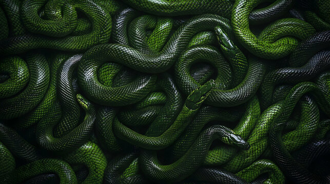
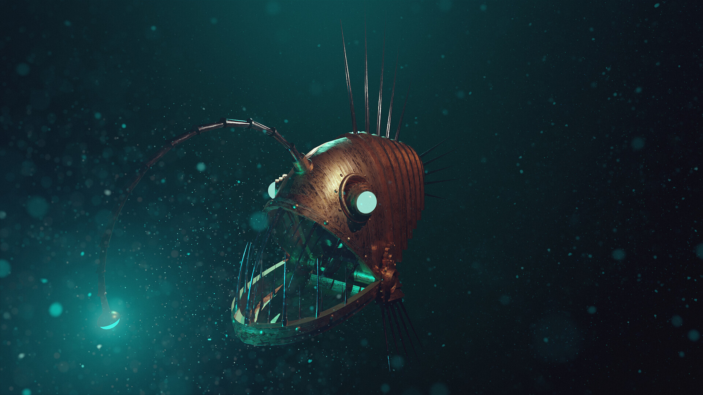
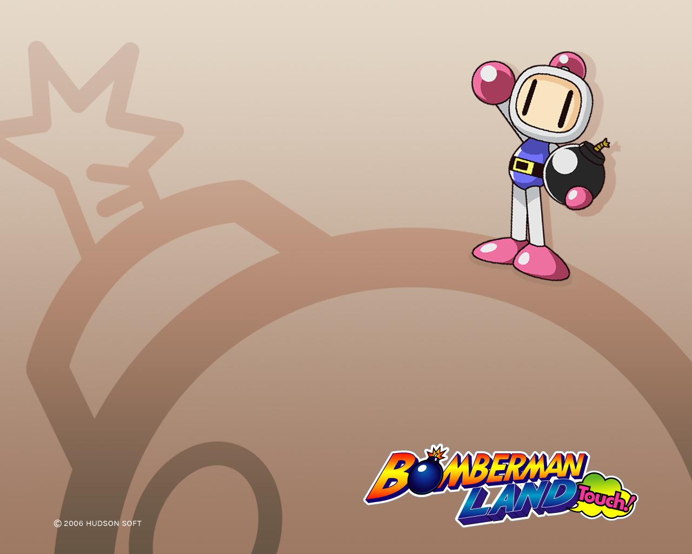
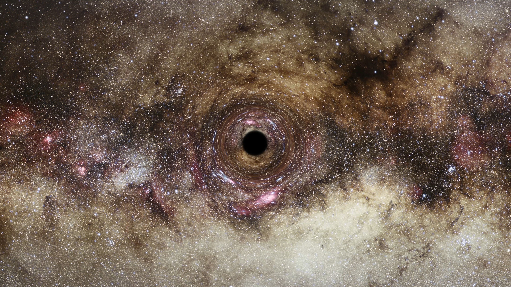
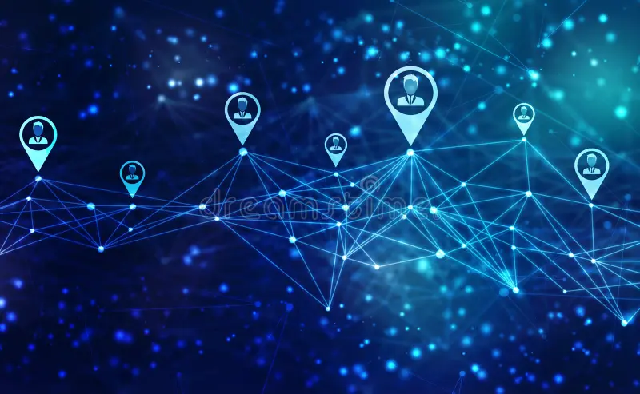

Hi, I'm Rashid

My Jounrey into programming
I did some programming in MATLAB during my degree, where I was studying physics, but I began seriously trying to learn to code when i joined a part time peer to peer program at 01Founders a few years ago, after deciding I needed a more stable career with room to grow during the pandemic.
I have made various projects both in groups and by myself in Go and Javascript. I have mostly worked on the backend on projects so far and would like to continue to improve my skills there as well as learn how to do frontend work so I can be a more well-rounded web dev.
I found I enjoy the puzzle solving and creative aspects when it comes to the projects I've worked on so far and I enjoy working collaboratively with others by teaching what i've learned and learning about other approaches from others.
Tutoring

While at university I began tutoring and I have tutored mathematics and physics upto A level in groups and 1-to-1, both for other companies and as a self employed private tutor. I'm still tutoring part time while I try to study and break into the world of tech.
I enjoy the satisfaction of helping people improve their confidence and finally get their head around something they've been struggling to understand. The 'AHA!' moment when something finally clicks is exhillerating, and being able to help give those moments to others is my favourite part of tutoring.
My tutoring experience has improved my communication skills and my ability to explain technical topics in a way tailored to different audiences with different levels of experience and knowledge.
Learning to code

01Founders
I have been studying part time at 01Founders for the last few years, which is a peer to peer coding course.
It involves completing various projects, some solo but mostly in groups, where we are given a project outline and requirements and then decide for ourselves how and what we need to learn to accomplish it, and deciding for ourselves how to design and implement the program to meet the requirements given without help from any teachers.
This has greatly improved my ability to work collaboratively, figuring out how to distribute workloads and make sure everyone is on the same page, working with git and dealing with merging code.
Online resources
I have also done some studying using online courses, particularly appacademy, kaggle learn, and various youtube channels including Franks Lab which was my introduction to object oriented javascript.
I've also greatly enjoyed 3blue1brown for learning the fundamentals about how machine learnign works as well as many other topics, and I've also watched various other programming related youtubers like The Primeagen and LowLevelLearning.
Areas I would like to improve on

Some areas I would like to improve on and that I hope joining Founders and Coders will help with include working with cloud tools and DevOps more generally, getting better at testing (especially end to end and integration testing), and improving my frontend skills.
Projects
Games
FAC yahtzee
This is the game i made for the application. It's an implementation of yahtzee.
It's the first project I've made trying to do it in the object oriented style where I wasn't following a tutorial. Initially I considered using canvas the way I did for the snake and flappy fish games before realizing that I didn't actually need read time updating for this project as things only change based on user input.
There's still room to improve in terms of styling and animations, and some ideas for extensions I had include power ups partway through (e.g. being able to boost your dice, getting extra dice, having special dice with different faces like only odd, only even, or extra sixes) but i didn't have time to implement them.
Multiplayer snake
This is a version of the classic game 'Snake' I made following a tutorial. I also added multiplayer functionality where two people can play on the same keyboard at the same time.
Flappy Fish
This is a version of the game 'Flappy Bird' I made following a tutorial. It includes multiple sets of controlls, you can use your mouse, your keyboard, or touch.
Bomberman
This is a recreation of the classic game 'Bomberman' I made with a group at 01Founders. You need to kill all of the enemies to progress to the next level, where the number of enemies increases.
The levels are randomly generated in terms of where the blocks are, and some of the blocks have powerups including invincibility, stronger bombs, more bombs and remote bombs.
Other Projects
Mini React

This project involved recreating behavious from the React framework and then using that framework to create a basic to do list that has all of the features on the to-do lists on todoMVC. I followed this excellent tutorial by Rodrigo Pombo.
here is the link to the todo list and here is the link to the code.
Gravitational Lensing
This was my final project during my Physics masters. It involved ingesting a large dataset of galaxies and using ray traving to simulate the path of light from galaxies to an observer, taking into account how light was bent by other galaxies on the path there. It was written in MATLAB.
Unfortunately I no longer have the code available
AI Safety Camp
Last year I joined a program called AI Safety Camp. It involved volunteering for 3 months to join a research team consisting of an experienced researcher and several junior team members who wanted to learn while assisting in completing a piece of research.
The particular project I joined was in the 'mechanistic interpretability' category, and involved joining a mature python codebase where I had to familiarize myself with how things currently worked, edit existing functions and create new ones in order to measure and visualize the effects of pruning neurons on performance in various areas.
For example, we would deliberately prune neurons that made performance on maths questions worse, and see how much performance dropped in physics, biology, chemistry, code, law etc.
Here is a link to my fork of the repo from the time, although I only worked on a small part of it.
Social Network
This was a group project to create a social network with posts, comments, groups, events, private and group messages, followers, notifications and other features. It was build with a go backend using SQLite as the database and React for the frontend. My contribution was mainly on the backend working with Go and SQLite.
It is not currently hosted so to see it you would have to clone the repo and run it locally. here is the link to the code.